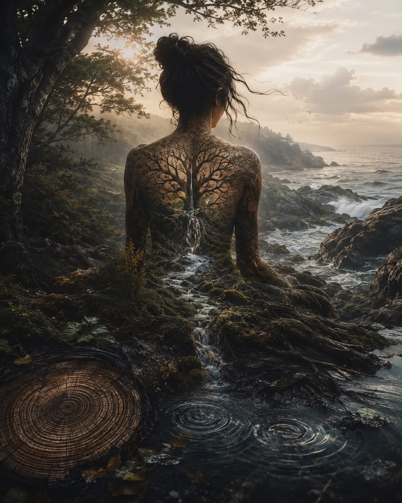

Jeg har sett litt på disse trinnene.
Ikke fordi alle som er edru må gjøre det. Mange velger å ikke bruke de 12 trinnene, men jeg har likevel villet prøve.
Bli litt mer kjent med meg selv.
Jeg er ferdig med det første trinnet:
«Vi innrømmet at vi var maktesløse overfor alkohol – at vi ikke lenger kunne mestre livene våre.»
Jepp, den kan jeg!
Jeg vet at jeg er maktesløs overfor alkohol.
Begynner jeg å drikke igjen, vet jeg jo hvordan det kommer til å ende.
Det første trinnet var egentlig ikke det vanskeligste.
Det var vondt.
Skamfullt.
Men også sant.
Det andre trinnet har vært vanskeligere:
«Vi kom til å tro at en kraft større enn oss selv kunne gi oss vår sunnhet tilbake.»
Flott, tenkte jeg.
Da sitter du fast allerede på andre trinnet.
Dette blir en lang trapp å gå…
For mange som blir edrue og rusfrie forteller at de fant en høyere makt.
Noen fant Gud.
Noen fant Jesus.
Andre Allah, Krishna eller noe helt annet.
De sier at de aldri hadde klart reisen uten.
Og det har skremt vettet av meg.
For enda så mye jeg har lett og prøvd, finner jeg ikke troen på en allmektig Gud.
Og tro meg, jeg har prøvd.
Jeg har lest om dem alle, gått i kirka, oppsøkt denne troen og håpet på å finne en høyere mening.
Men jeg finner den ikke, så for mange år siden valgte jeg å melde meg ut av statskirken.
Så kom jeg over en filosofi – vel, strengt tatt regnes den vel som en verdensreligion:
Buddhismen.
Jeg skal ikke påberope meg at jeg er buddhist, men jeg liker filosofien.
Dette med at man ikke tilber en allmektig skapergud, men at målet er å frigjøre seg fra lidelse gjennom egen innsikt.
Å ta ansvar for sin egen vekst.
Buddha var ikke en gud eller en guddommelig skapning, men et menneske som levde i India for rundt 2500 år siden.
Navnet Buddha betyr «den oppvåknede»,
en tittel han fikk etter å ha oppnådd dyp innsikt i tilværelsens natur.
Han sa selv at han ikke kunne frelse noen, men fungerte som en veiviser.
Han sa tydelig at han bare viste veien.
Jobben med egen utvikling må man gjøre selv.
Og det traff meg.
For det var akkurat det jeg trengte å høre.
Ikke at noen skulle redde meg.
Men at jeg måtte begynne å redde meg selv.
Buddha mente at man ikke skulle følge regler og tradisjoner uten å tenke over dem selv.
Han la heller vekt på at hver enkelt må gå veien mot egen utvikling.
Så i min edring, i min tilfriskning, har jeg lest en del om denne filosofien.
Funnet et håp i den.
Funnet en trøst i at vi alle er en del av noe større.
I naturen.
I meg selv.
I min egen nysgjerrighet på å utvikle meg som menneske.
Jeg kom over en bok jeg ikke visste eksisterte, for jeg trodde at det bare var munker, menn, som fulgte Buddha.
Men det var – og er – kvinner også.
Nonner.
Og de har en egen bok: Søstrenes sanger (Therigatha), en samling dikt skrevet av de første buddhistnonnene på Buddhas tid.
Disse kvinnene kom fra alle samfunnslag – fra fattige enker til rike prinsesser, til kvinner med rusproblemer – som alle valgte å forlate samfunnets forventninger for å finne fred.
For meg har det vært en stor trøst å oppdage at det fantes kvinner for så utrolig lenge siden som søkte akkurat det samme som meg.
Ved å tørre å møte seg selv fullt ut, med alt det innebar av smerte og sårbarhet, klarte de å finne den indre friheten og styrken de lette etter.
Deres stemmer minner meg om at reisen innover i seg selv er en tidløs menneskelig erfaring.
Det minner meg om at hvis jeg fortsetter å gjøre det samme, kommer livet stort sett til å fortsette å se likt ut.
At det er vondt å endre seg.
Men det er enda vondere å bli stående fast.
Jeg ventet i mange år på at livet skulle bli annerledes.
Men det skjedde først den dagen jeg begynte å gjøre noe annerledes selv.
Da jeg innså at jeg ikke hatet alkoholen.
Jeg hatet hvordan den sakte tok fra meg meg selv.
At noe i meg lengtet tilbake til livet mitt litt mer enn jeg lengtet etter rusen.
At min avhengighet sjelden handlet om å ville ruse seg.
Den handlet om å slippe å kjenne.
At jeg velger hver eneste dag
å ikke la avhengigheten bestemme resten av livet mitt.
Så kommer disse dagene –
som jeg har nå.
I dag.
Der dagen er litt ekstra tung, og styggen på ryggen hvisker meg i øret at det bare er å dra på butikken eller på polet.
At det jo bare er å kjøpe seg noen timer med fred.
Da prøver jeg å minne meg på det jeg har lært fra den eldgamle filosofien.
At alt, absolutt alt, er i konstant endring.
Det er min egen oppgave, mitt valg, å stå stødig når livet er vondt å bære.
Noen dager er ikke det nok.
Alle disse vise ordene fra denne filosofen, denne veiviseren som levde for over 2500 år siden.
Da prøver jeg å finne trøst i naturen.
Kjenne at jeg er en del av den.
At det i seg selv er en høyere makt.
At naturen er så mye større enn meg, og samtidig en del av meg.
Og jeg minner meg selv på det jeg har lært.
At alt, absolutt alt, er i konstant endring.
I naturen.
I årstidene.
I meg.
At følelser kommer.
Og følelser går.
At min oppgave ikke er å slippe unna smerten.
Men å stå stødig mens den er der.
Noen dager hjelper ikke det heller.
Da må jeg ut.
Til skogen.
Til havet.
Til fjæra.
Eller bare en liten tur med bikkja.
Og så stopper jeg opp.
Ser meg rundt.
Og det slår meg at grenene i lungene mine
ser ut som greinene på et tre.
At røttene under skogen
ligner blodårene som holder meg i live.
At fingeravtrykkene mine
følger de samme sirklene
som årringene i et gammelt tre.
At nervene mine finner veien gjennom kroppen,
slik bekkene finner veien mot havet.
Som om naturen
har brukt den samme blyanten
hele tiden.
Bare tegnet oss
på forskjellige måter.
Og akkurat da kjenner jeg at jeg kanskje har funnet den.
Min høyere makt.
Min ro.
Og så kan jeg stå der og faktisk tørre å kjenne at ja, jeg har lyst til å drikke i dag.
Men jeg tør også kjenne på hvor desperat jeg var etter å slippe da jeg holdt på.
At faen heller, Alise…
Jeg vil da heller fortsette å være edru enn å måtte finne veien tilbake hit en gang til.
